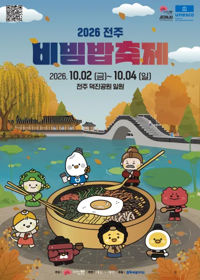
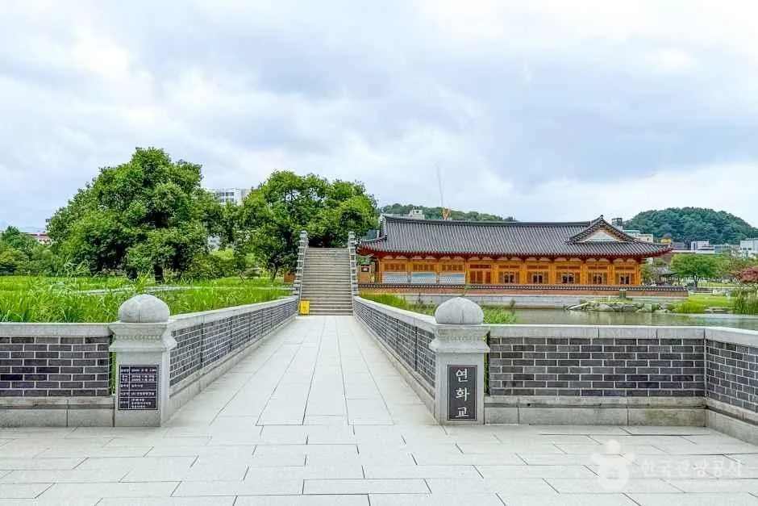
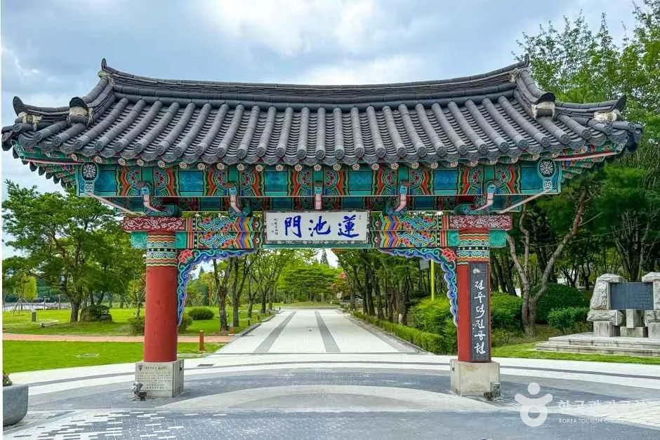
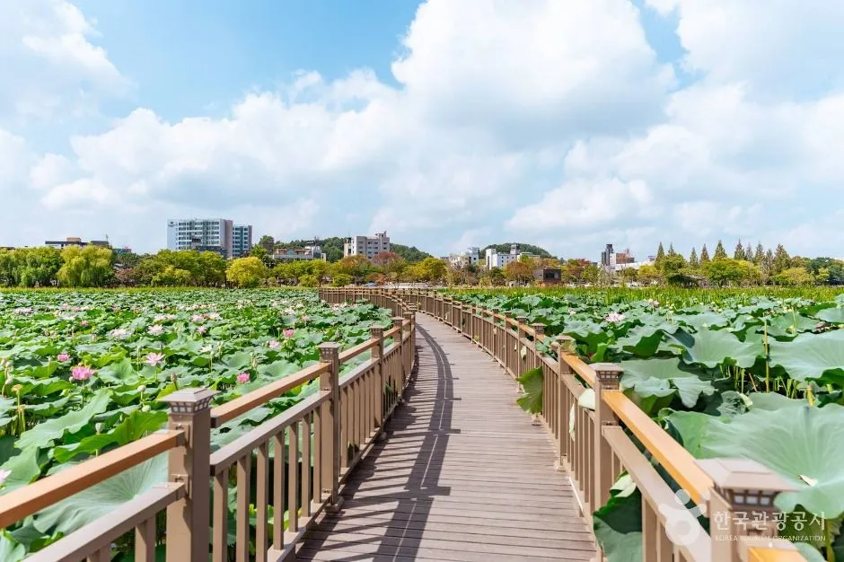
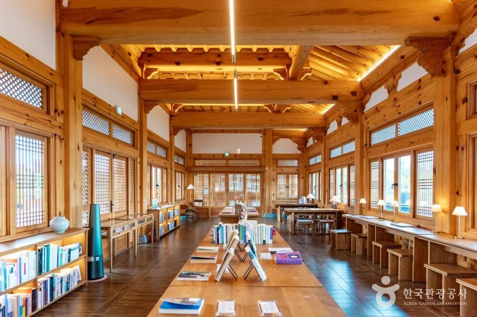
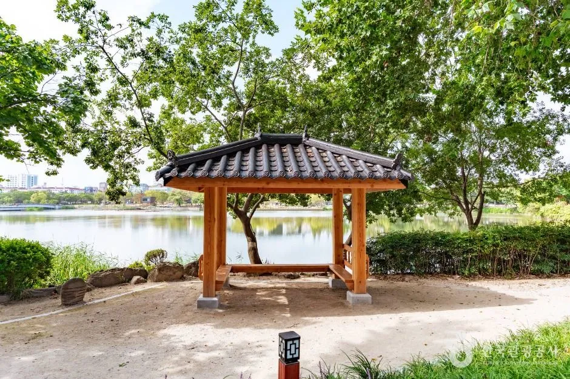
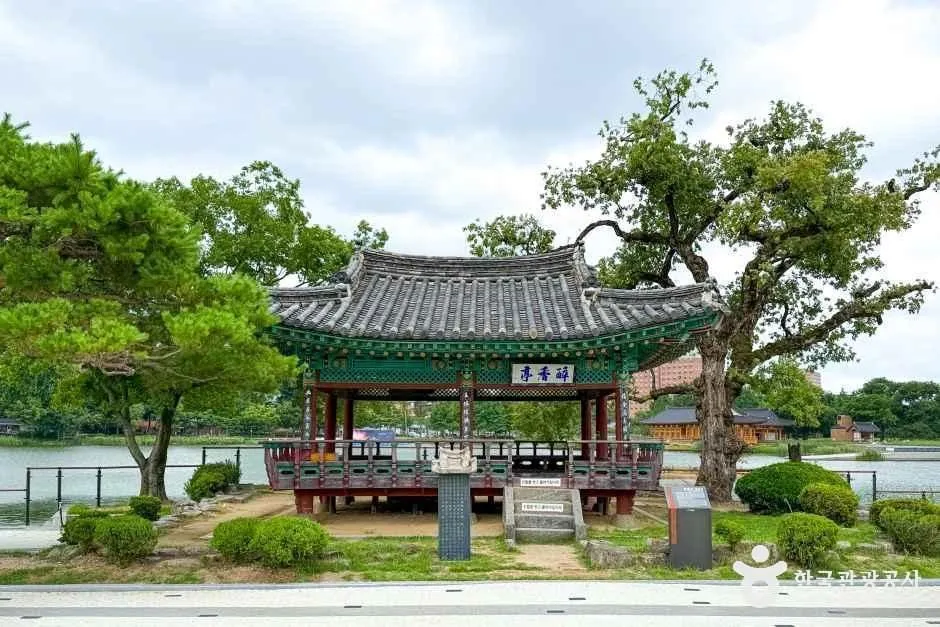
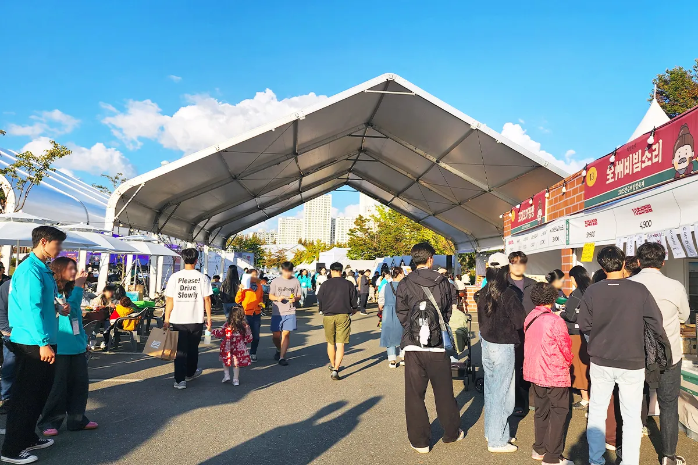
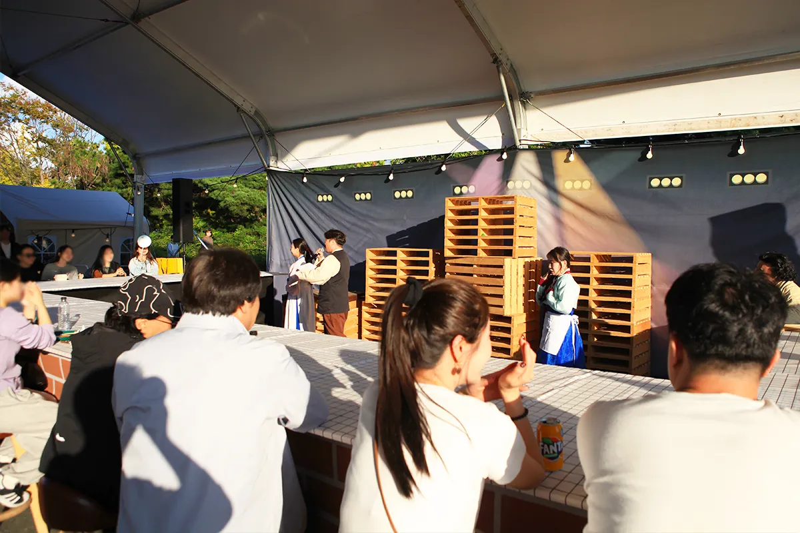

▲ 지난해(2025년) 전주비빔밥축제 무대의 타악 공연 장면. 올해는 덕진공원에서 열린다 사진=전주시 문화관광(2025년 행사)
전주비빔밥축제가 올해는 월드컵경기장이 아니라 덕진공원으로 자리를 옮겨 10월 2일(금)부터 4일(일)까지 사흘간 열린다. 전주시 문화관광 누리집의 행사 정보에는 장소가 '덕진공원 일원', 가격이 '무료', 문의가 063-283-1141로 올라 있다. 전주시 행사 페이지와 9월 29일 전후 보도 10여 건을 다시 확인했지만 일자별 프로그램 시간표·개막식 시각과 전용 주차장·셔틀 계획은 공개 자료에서 찾지 못했다. 대신 전주시가 10월 1일 "가급적 대중교통을 이용해 달라"고 밝힌 사실은 확인된다.
이 글은 지금까지 공개된 보도자료·공식 행사 페이지로 확인된 것과 확인되지 않은 것을 나눠, 자가용으로 가도 되는지 판단할 수 있도록 접근·주차 정보를 정리했다.
1. 올해는 왜 덕진공원인가 — 달라진 점부터
전주비빔밥축제는 지난해(2025년 10월 24~26일)까지 전주월드컵경기장 일대에서 열렸다. 올해는 전주시가 대규모 시설 중심에서 벗어나 공원의 자연경관과 수변 공간을 활용하는 방향으로 덕진공원으로 옮겼다(뉴스핌·MTN 보도). 시는 이를 전주의 추억과 자연, 문화, 미식이 어우러지는 새로운 시작이라고 표현했다(MTN 보도).
자동차 이용자에게 중요한 변화는 경기장 주변 대형 주차 공간 대신 도심 호수공원과 그 주변 도로를 쓰게 됐다는 점이다. 장소 이전으로 접근 방식이 바뀌었기 때문에 작년 경험을 그대로 적용하기는 어렵다.
전주시는 8월 발표에서 덕진호·연꽃·음악분수·연화정도서관 같은 공원 자원을 활용해 대형 무대 설치를 최소화하고 예산을 줄이며, 한옥마을에 몰린 관광 동선을 덕진권으로 분산하겠다는 취지를 밝혔다(이트레블뉴스·뉴스핌 보도). 관람형 공연보다 시민이 직접 참여하는 프로그램 비중을 높였다는 설명도 같은 보도에 나온다.
작년과 비교하면 교통 대책의 공개 수준 차이가 크다. 전북일보는 2025년 10월 23일 보도에서 월드컵경기장 P6·P7 주차장이 비빔밥축제·페스타로 전면 폐쇄되고 같은 달 25일 전북현대 홈경기(통상 관중 약 1만 8천 명)까지 겹쳐 혼잡이 불가피하다고 전하면서, 시가 1994번 버스 증차, 축제 전용 셔틀버스, 주차 안내 인력 추가 등을 내놨다고 소개했다. 올해는 같은 종류의 대책이 보도에서 확인되지 않는다(10월 1일 기준).
| 항목 | 내용 |
|---|---|
| 기간 | 2026년 10월 2일(금)~10월 4일(일), 3일간 |
| 장소 | 덕진공원 일원 (전북특별자치도 전주시 덕진구 권삼득로 390) |
| 입장료 | 무료 (음식 등 부스 이용은 별도, 요금은 확인 못 함) |
| 문의 | 063-283-1141 (전주시 문화관광 행사 페이지 기재) |
| 연휴 | 10월 3일(토) 개천절, 10월 5일(월) 대체공휴일로 3~5일 사흘 연휴(2026년 달력 기준) |
| 지난해 | 2025년 10월 24~26일, 전주월드컵경기장 일대 |

▲ 2026 전주비빔밥축제 포스터. 기간 2026.10.02(금)~10.04(일), 전주 덕진공원 일원이 표기돼 있다 사진=전주시 문화관광
행사 개요와 최신 공지는 전주시 문화관광 사이트에서 확인할 수 있다. 전주비빔밥축제 공식 안내 바로가기
2. 20여 개 프로그램, 무엇이 있나
보도자료 기준 프로그램은 20여 개다. 핵심은 시민과 방문객이 함께 대형 비빔밥을 완성하는 '대형 비빔밥 퍼포먼스'이고, 나머지는 먹거리 거리·공연·체험으로 나뉜다. 아래 표는 보도에 이름이 나온 것만 모았으며 일자별 배치는 공개 자료에서 확인하지 못했다.
| 분류 | 프로그램 | 보도된 내용 |
|---|---|---|
| 먹거리 | 전주 비빔밥 거리 | 지역 업체 참여 |
| 팔도 비빔거리 | 전국 각 지역의 비빔밥 | |
| 세계 비빔거리 | 각국의 비빔 요리 | |
| 비빔밥 미니 월드 | 이름만 소개, 세부 내용 확인 못 함 | |
| 비빔밥 여행자 식당·여행자 라운지 | 라이브 공연과 식사, 전통주 페어링 | |
| 공연·퍼포먼스 | 대형 비빔밥 퍼포먼스 | 시민·방문객 참여형 |
| 비빔밥 퍼레이드 | 타악 퍼레이드 | |
| 비빔밥 댄스파티 | 국악과 DJ 결합 | |
| 체험·홍보 | 비빔 쿠킹쇼 | 유명 셰프 요리 교실(아시아투데이·이투데이 표현) |
| 스탬프투어·전주비빔프렌즈 포토존 | 가족 단위 참여형 | |
| 유네스코 창의도시 홍보존·전주음식 홍보관 | 전주 음식문화 소개 | |
| 판매 | 플리마켓·지역상생관·팝업스토어 | 소상공인 참여, 굿즈 판매 |
공연 중심에서 관객 참여형으로 전환했다는 보도(MTN)에 비추어, 무대 시간에 맞춰 이동하기보다는 거리형 부스를 천천히 돌며 먹는 동선이 중심이 될 것으로 보인다(추정). 음식 구매 방식(쿠폰제 여부 등)과 가격은 확인하지 못했다.
3. 지금 가도 되나? 개막 직전 확인된 것과 확인 못 한 것
결론부터: 개막일(10월 2일)은 아직 일정·교통 안내가 공개 범위에서 충분하지 않다. 방문 전에 아래 표로 확인 상태를 점검하자.
| 항목 | 상태 | 근거·비고 |
|---|---|---|
| 개최 기간·장소 | 확인됨 | 전주시 문화관광 행사 페이지, 다수 보도 |
| 입장료 | 확인됨(무료) | 전주시 문화관광 행사 페이지 |
| 프로그램 목록 | 확인됨 | 보도자료 20여 개 명칭 기준 |
| 일자별 시간표·개막식 시각·대형 비빔밥 퍼포먼스 시각 | 확인 못 함 | 전주시 문화관광 행사 페이지는 기간·장소·가격·문의만 기재, 9월 29일자 보도자료 계열 기사에도 시각 없음(10월 1일 재확인) |
| 일일 운영시간(몇 시~몇 시) | 확인 못 함 | 야간 운영 여부도 공지 없음 |
| 전용 주차장·임시주차·셔틀 | 확인 못 함 | 보도에 언급 없음, 전주시는 대중교통 이용 권장(작년 월드컵경기장 때는 전용 셔틀 보도가 있었음) |
| 시내버스 증차·노선 변경 | 확인 못 함 | 전주시 10월 1일 안내(대중교통 권장)에 구체 증차 내용 없음 |
| 교통통제 구간 | 확인 못 함 | 기린대로 BRT 공사 구간 혼잡 우려만 공지, 축제 기간 통제 구간 안내는 보도에 없음 |
| 혼잡 시간대 | 추정 | 공식 통계 없음. 주말 점심·저녁 식사 시간대가 붐빌 것으로 추정 |
ℹ️ 날씨·연꽃은 따로 체크
투어전북은 덕진공원에 7월 초 연꽃이 피는 시기 관광객이 많이 찾는다고 소개한다. 10월 초 행사에서 연꽃 풍경을 기대하기는 어렵고, 이 글의 연꽃 사진은 개화기에 촬영된 것으로 보인다. 이번 방문의 중심은 비빔밥 먹거리와 호수 산책이다.
가장 현실적인 방법은 전주시 문화관광 행사 페이지와 문의 전화(063-283-1141)에서 당일 아침 공지를 확인하는 것이다. 개최 중에도 현장 안내가 바뀔 수 있으므로 시간표는 특히 현장 공지를 우선하자.
✅ 출발 전 3단계 확인 순서
- 전주시 문화관광 행사 페이지에서 당일 공지·시간표 게시 여부 확인
- 내비게이션 실시간 교통정보로 기린대로·권삼득로 정체 확인
- 주차장 만차 시 대체 지점(예술회관 주차장, 대중교통 환승 지점)을 미리 정해 두기
4. 자가용 접근·주차 — 기린대로 BRT 공사부터 변수
전주시 대중교통국장은 10월 1일 "가급적 대중교통을 이용해 달라"며, 기린대로 BRT 사업의 중앙차선 공사가 본격 진행돼 축제 방문 차량과 나들이객이 겹치면 기린대로와 인근 도로가 혼잡할 것으로 우려된다고 밝혔다(한국미디어뉴스 보도). 덕진공원은 권삼득로에 있고, 공원 앞에는 시내버스 정류소 '기린대로덕진공원'(31083번)이 있을 만큼 기린대로 축과 가깝다. 자가용 이용자는 이 공지를 가장 먼저 반영해야 한다.
기린대로 BRT 1단계는 호남제일문~한벽교 9.5km 구간으로, 아시아경제는 2026년 1월 보도에서 이 구간이 연내 개통을 목표로 하며 11월 운영 시작을 예정한다고 전했다. 즉 축제 기간은 공사가 마무리 단계로 접어드는 시기이며, 어느 차로가 막히는지는 공식 통제 공지가 없어 알 수 없다.
| 구분 | 내용 | 확인 상태 |
|---|---|---|
| 덕진공원 자체 주차 | 투어전북 정보에 "주차시설 있음"으로 기재(공원 문의 063-239-2607) | 면수·요금은 공식 확인 못 함 |
| 덕진공원 무료주차장(덕진동1가 40-6) | 모두의주차장 기준 70면, 무료, 00:00~24:00 표기 | 민간 앱 수치, 공식 확인 못 함, 축제 기간 운영 불확실 |
| 전주덕진예술회관 주차장(권삼득로 407) | 공공시설 예약 포털 공유누리 등록 정보 기준 160면·무료·종일 개방. 다만 2024년 7월 전북일보는 147면 규모에 차단기·무인정산시스템 설치와 유료화를 추진 중이라고 보도(인근 식당·덕진공원 방문객이 오래 이용해 온 주차장이라는 주민 우려 포함) | 현재 유료 전환 여부·요금, 축제 기간 개방 여부 확인 못 함 |
| 축제 전용 임시주차·셔틀 | 보도에 없음 | 확인 못 함 |
✅ 자가용으로 갈 때 현실적인 준비
- 개막일 오후·주말 점심 전후를 피해 오전 일찍 도착(혼잡 시간은 추정)
- 공원 정문 바로 앞 주차를 기대하지 말고, 인근 주차장에 세운 뒤 걷는 방식으로 계획
- 기린대로 구간은 내비게이션 실시간 교통정보 확인, 우회로 확보
- 가족 동반이면 짐을 줄이고 유모차·휠체어 이동 동선은 현장 안내 확인
- 전통주 라운지 등 음주 계획이 있으면 자가용 대신 대중교통·대리운전 고려

▲ 덕진공원 호수 위 보행 다리와 한옥 건물. 수생식물이 우거진 여름철에 촬영된 것으로 보이는 사진이다 사진=한국관광공사
대중교통은 아래 표처럼 덕진공원을 지나는 노선 정보가 검색되지만, 축제를 위한 노선 변경·증차 여부는 확인하지 못했다. 전주시 교통정보센터에서 실시간 도착 정보를 확인하는 편이 안전하다.
| 수단 | 내용 | 유의점 |
|---|---|---|
| 9번 버스 | 송천동종점~덕진공원~전북대학교~전주덕진소방서 등을 도는 노선(나무위키 정리 기준) | 비공식 정보, 당일 실시간 확인 필요 |
| 165번 버스 | 정류소 '기린대로덕진공원'(31083번) 경유, 첫차 06:00·막차 22:20, 평일 배차 22분으로 표기(버스 정보 사이트 기준) | 막차 시각은 노선 전체 기준 표기일 수 있어 정류소별 시각은 확인 필요 |
| 택시·승차 공유 | 공원 앞 하차 가능 여부, 축제장 주변 승하차 구역은 확인 못 함 | 귀가 시간대 대기가 길어질 수 있음(추정) |

▲ 한국관광공사가 덕진공원 외부 사진으로 게시한 기와지붕의 전통 문 건물. 촬영 시기는 알 수 없고 축제 현장 모습은 아니다 사진=한국관광공사
실시간 버스 정보는 전주시 교통정보센터에서 확인할 수 있다. 전주시 교통정보센터 바로가기
5. 먹고 나서 걷는 코스 — 덕진공원 호수 산책
덕진공원은 호수를 중심으로 연화정도서관, 전통 정자, 목재 보행로, 현수교 등이 이어지는 공원이다. 투어전북 기준 연중 개방(공원 문의 063-239-2607)이며 연화정도서관은 화~일 10:00~19:00 운영한다. 투어전북은 이 밖에 음악분수와 신석정·김해강 등 시인의 시비도 공원 시설로 소개한다. 비빔밥을 먹은 뒤 호수 둘레를 한 바퀴 걷는 것이 가장 자연스러운 코스다.
| 장소 | 특징 |
|---|---|
| 연화정도서관 | 호수 위 한옥 도서관, 화~일 10:00~19:00 |
| 목재 보행로(데크) | 연못을 가로지르는 산책로 |
| 전통 정자 | 호수를 바라보며 쉬는 쉼터 |
| 현수교 | 호수 위를 건너는 다리 |
| 음악분수·시비 | 투어전북 소개 시설. 분수 가동 시간은 확인 못 함 |

▲ 연못 위로 이어지는 목재 보행로. 연꽃이 핀 시기에 촬영된 사진이며 10월 풍경과는 다를 수 있다 사진=한국관광공사

▲ 한국관광공사가 덕진공원으로 게시한 한옥 건물 내부 사진. 서가와 긴 탁자가 보인다. 촬영 시기는 알 수 없다 사진=한국관광공사

▲ 호숫가에 자리한 기와지붕 정자 사진=한국관광공사

▲ 소나무가 어우러진 호숫가 정자 사진=한국관광공사
걷기 부담이 크다면 공원 안은 부스 거리만 둘러보고, 호수 한 바퀴는 생략해도 된다. 소요 시간은 개인 속도에 따라 다르며 공식 코스 거리는 확인하지 못했다.
6. 같은 날 한옥마을 야행과 묶을 수 있을까
10월 2~3일에는 전주 한옥마을권에서 국가유산야행(18:00~22:00, 무료)도 열린다. 낮에는 덕진공원 축제, 저녁에는 한옥마을 야행으로 이어 갈 수 있지만 두 곳이 같은 날 도심 교통을 나눠 쓰므로 이동 시간은 여유 있게 잡아야 한다(차량 이동 시간은 공식 확인 못 함, 추정).
| 항목 | 전주비빔밥축제 | 국가유산야행 |
|---|---|---|
| 날짜 | 10/2(금)~4(일) | 10/2(금)~3(토) |
| 시간 | 확인 못 함 | 개막 행진 17:30, 프로그램 대부분 18:00~22:00(공식 일정표 기준, 자세한 내용은 야행 기사 참고) |
| 장소 | 덕진공원 일원(덕진구) | 경기전·풍남문·전라감영 일대(완산구) |
| 두 곳 거리 | 두 장소 좌표 기준 직선 약 4~5km(자체 계산, 실제 도로 이동은 더 길고 혼잡 시 시간이 크게 늘 수 있음) | |
- 10월 4일(일)은 야행이 열리지 않아 비빔밥축제만 즐기기 쉬운 날이다. 다만 연휴 중간이라 방문객이 몰릴 가능성은 있다(추정).
- 10월 3일(토)은 개천절이면서 두 행사가 겹치는 날이라 가장 붐빌 가능성이 큰 날로 보인다(추정, 공식 예상 인원 확인 못 함).
- 야행 개막 행진 17:30에 맞추려면 덕진공원 일정은 오후 이른 시간에 마무리하고 한옥마을 도착은 16시대로 잡는 편이 안전하다(추정).
- 야행 시간표와 야간 주차 동선은 전주 국가유산야행 시간표 기사에서 정리했다.
- 한옥마을 주차장 정보는 전주한옥마을 무료주차장 가이드를 참고하자.

▲ 지난해(2025년) 행사장의 천막 부스 거리. 올해 덕진공원 현장 사진은 아니다 사진=전주시 문화관광(2025년 행사)

▲ 지난해(2025년) 행사장 천막 아래 관람객 모습 사진=전주시 문화관광(2025년 행사)
7. 자주 묻는 질문
| 질문 | 답변(10월 1일 기준) |
|---|---|
| 입장료와 주차비는? | 입장은 무료(전주시 행사 페이지). 주차비는 공식 안내가 없다. 덕진예술회관 주차장은 등록 정보상 무료였으나 유료화 추진 보도가 있어 현장 확인이 필요하다 |
| 대형 비빔밥 퍼포먼스는 몇 시인가? | 공개 자료에서 확인하지 못했다. 시각은 전주시 행사 페이지·현장 공지로 확인해야 한다 |
| 전용 셔틀이 있나? | 보도에 없다. 작년 월드컵경기장 때는 전용 셔틀이 보도됐지만 올해는 확인되지 않는다 |
| 비가 오면? | 우천 시 운영 방침은 확인하지 못했다. 공원 야외형 행사라 당일 공지를 확인하는 것이 안전하다(추정) |
| 음주 계획이 있으면? | 전통주 페어링 프로그램(여행자 라운지)이 예고돼 있어 자가용 대신 대중교통이나 대리운전을 권한다 |
8. 요약
2026 전주비빔밥축제는 10월 2~4일 덕진공원 일원에서 무료로 열리며, 대형 비빔밥 퍼포먼스와 팔도·세계 비빔거리 등 20여 개 프로그램이 예고됐다. 올해부터 월드컵경기장에서 덕진공원으로 장소가 바뀌었다.
시간표와 전용 주차·셔틀은 공개 자료에서 확인하지 못했고, 전주시는 기린대로 BRT 공사로 인한 혼잡을 이유로 대중교통 이용을 권장했다. 자가용은 오전 일찍, 인근 주차 후 도보로 계획하고 당일 공지와 063-283-1141 문의로 최종 확인하자.